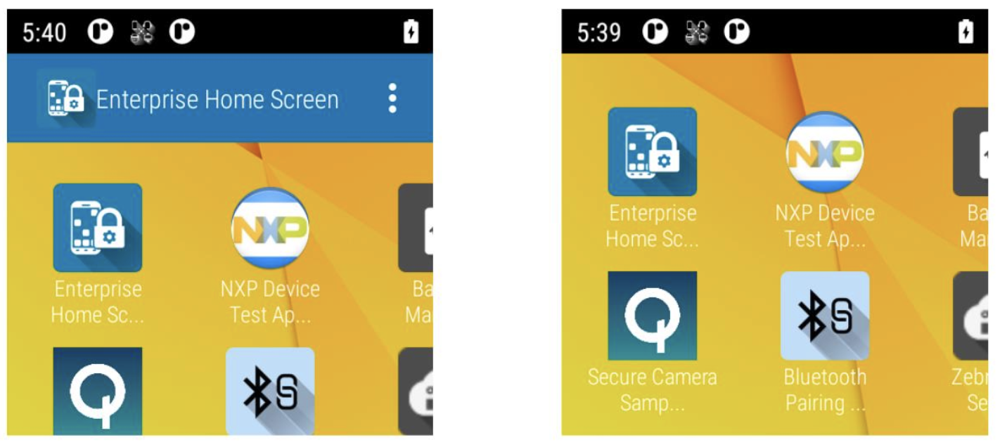

EHS 6.0 の新機能
概要
Zebra Enterprise Home Screen は、Zebra Technologies の無料の Android アプリで、管理者はカスタム コードを書かずに、Zebra デバイスでアプリや設定へのアクセスを簡単に制御できます。シンプルなタッチ インタフェースを使用することで、EHS は簡単に 1 つまたは複数の指定されたアプリケーションに使用を制限し、デバイス設定の変更を防止し、ファイル システムをロック ダウンします。数秒で設定でき、MDM 経由で設定を展開できます。EHS 設定は、読みやすく、必要に応じて手作業で編集できる、シンプルな XML ファイルに保存されます。
EHS は、通常の Android アプリ起動プログラムとホーム画面と入れ替わることで機能します。最初に実行したとき、下のような画面が表示され、開くホーム アプリと選択を固定するかどうかを選択できます。EHS は、セレクタ ダイアログを省略して、デフォルトの起動プログラムとしてインストールすることもできます。
注: EHS の機能の多くは、デバイス上で手動で、EMDK を介してプログラムで、または StageNow またはサードパーティのモバイル デバイス管理 (MDM) システム (MDM システムでサポートされている場合) を使用してリモートで行うことができます。EHS では、機能を 1 つのツールにまとめますが、デバイスのセキュリティを確保するために完全にロックダウンすることはできません。セキュリティを最大限に高めるため、Zebra では、(EMDK または StageNow 経由で) Android および Zebra の MX が提供する追加のセキュリティ オプションとともに EHS を使用することを推奨しています。
Enterprise Home Screen では、以下の言語がサポートされています。
- 英語 (米国)
- 簡体字中国語
- 日本語
初めてインストールする場合、EHS は管理者に次のシンプルな選択肢を提示します。
[常に] を選択すると、デフォルトのホーム アプリとして EHS がロックされ、デフォルトで以下のデバイス機能からユーザーがロック アウトされます。
- USB デバッグ
- ファイル システムへのアクセス
- 検索アプリへのアクセス
- キーガード画面カメラおよび検索機能
- システム設定パネルへのフル アクセス
- 最近使用したアプリ ボタン
管理者は、個々の機能へのアクセスを許可または制限したり、設定パネル全体を非表示にしたりできます。
Android 11 を実行しているデバイスにのみ適用されます。詳細について は、「Android 13 に関する注意事項」を参照してください。
[常に] を選択した後、10 秒間待ってから再起動し、変更が継続していることを確認します。
開始する準備はできましたか? Google Play または Zebra サポート ポータル から Enterprise Home Screen を今すぐダウンロードしてください。
EHS 6.0 の新機能
- Android 13† を実行している Zebra デバイスをサポートするようになりました (Android 11 を実行しているデバイスのサポートは継続します)
- Android 10.0 のサポートが終了しました。EHS 5.0 は、Android 10.0 以前を実行しているデバイスをサポートする最終バージョンです。
- 新規ガイド: EHS で管理対象の構成を使用
†下記の Android 13 に関する注意事項を参照してください。
サポートされているデバイス
EHS 6.0 では、Android 13 を実行している Zebra デバイスのサポートが追加されています。Android 13 には、現在 TC21、TC53、および TC73 が含まれています。
サポートされているすべてのデバイスを表示
Zebra WS50 デバイスに関する注記
WS50 は、2 インチの画面を備えたフル機能のウェアラブル タッチ コンピュータです。
 WS50 をスクロールすると、EHS ユーザー画面の一部 (上、右) が格納されます。
画像をクリックすると拡大表示され、Esc キーを押すと終了します。
WS50 に関する注意事項
- 特権設定機能は WS50 デバイスではサポートされていません。以下の Zebra の推奨事項を参照してください。
- WS50 固有の
enterprisehomescreen.xml設定ファイルは必要なく、1 つのファイルを作成して、サポートされているすべてのデバイスに展開できます。 - 構成ファイルの保存先フォルダはすべてのデバイスで同じです:
/enterprise/usr/ - WS50 では
enterprisehomescreen.xmlファイルを編集または表示できません。 - 以下の EHS 機能は、WS50 での実行時には無効化されます。
- クイック ビュー
- ワイヤレス情報
- バッテリ情報
- アイコンの設定 (デフォルトではアプリ アイコンのサイズは [中])
- [ツール] -> [構成のエクスポート]
- [ツール] -> [特権設定]
- 設定
Zebra の推奨事項
- 初めて EHS を WS50にインストールする前 に、構成ファイルをデバイスにプッシュして、USB デバッグ、システム設定パネル、および Android クイック検索を有効にします。これにより、 特権設定が手動で有効になり、EHS のインストール後の管理が効率化します。構成ファイルの詳細については、以下を参照してください。
- ユーザーが [設定] パネルにアクセスできないようにするには、ユーザーに展開する前に、有効なアプリのリストからシステム設定アプリを削除することを含む 2 番目の構成ファイルをデバイスにプッシュします。
- フルサイズのディスプレイを搭載したデバイスで WS50 ターゲット向けの設定を構成し、広範囲に展開する前に WS50 に展開してテストします。
特権設定を手動で有効化する
USB デバッグを有効化する:
<preferences>
<usb_debugging_disabled>0</usb_debugging_disabled>
</preferences>
システム設定パネルのすべての機能を有効化する:
<preferences>
<system_settings_restricted>0</system_settings_restricted>
</preferences>
Android の設定アプリ ([USB Preferences] (USB 設定) >[File Transfer] (ファイル転送) へのアクセスを含む) を有効化します。
<preferences>
<apps_enabled>
<application package="com.android.settings"/>
</apps_enabled>
</preferences>
Android クイック検索アプリを有効化する：
<preferences>
<apps_enabled>
<application package="com.android.quicksearchbox"/>
</apps_enabled>
</preferences>
関連項目
- WS50 について | 説明、ユース ケース、仕様
- WS50 プログラマ ガイド | デバイス リソースが限られている小さい画面用アプリを作成するためのガイドライン
- その他の WS50 リソース | DataWedge での WS50 の使用、デモ アプリ
Android 13 に関するメモ
Android 13.x 以降を実行しているデバイスに適用されます。
- デバイスを Android 13 にアップグレードする前に、既存の EHS のバージョンは必ず削除してください。削除しなかった場合、デバイスが使用できなくなる可能性があります。
- インストール後、 EHS をデフォルトのホーム アプリ (ランチャー) として指定する必要があります。
デフォルトのホーム アプリを設定する方法:- EHS アプリのアイコンを 長押しして[アプリ情報] を選択します
～または～ - [設定] > [アプリ] > [デフォルト アプリ] > [ホーム アプリ] に移動します
- EHS アプリのアイコンを 長押しして[アプリ情報] を選択します
セットアップ ガイドの他の「アップグレードに関する注意事項」も参照してください。
Android 11 に関するメモ
Android 11.x 以降を実行しているデバイスに適用されます。
- OSX 11.5.21 以降を搭載したデバイスでは、Android システム設定への アクセス制限 により、ユーザー補助機能も有効になります。詳細はこちら。
- 分割画面機能を使用するには、[最近使用したアプリ] ボタンのブロックを解除する必要があります。.Android マルチウィンドウ機能の詳細はこちら。
- Android 11 を実行しているデバイスでは、[最近使用したアプリ] ボタンを長押ししても分割画面モードに直接アクセスできません。
2 つのアプリを並べて実行する方法:- Recent Apps Access Disabled パラメータを「Disabled」に設定します (UI ではチェックをオフ、構成ファイルでは「0」) 。
- Recent Apps Button Actions パラメータで「Enable both」を選択します (構成ファイルでは「0」) 。
- デバイスの [最近使用したアプリ] ボタンを短く押すと、最近使用したアプリのリストが表示されます。
- 画面分割したいアプリのいずれかを長押ししてオプションを表示し、[分割画面] を選択します
バージョン履歴
EHS 5.0 の新機能
- Google Play または Zebra サポート ポータルから入手可能です。
- EMM システムを介したリモート構成の管理対象の構成をサポートできるようになりました。
- 次のシステム設定制限機能がサポートされるようになりました。
- Android のユーザー補助機能の有無にかかわらず、システム設定が制限されていますす (Android 11 以降が必要です。デバイスの要件を参照)
- 次の [最近使用したアプリ] ボタンの動作を強化します。
- 短く押すと、最近起動したアプリが一覧表示されます (デフォルトの動作)
- 長押しすると画面分割が有効になり、2 つのアプリを並べて表示できます
バージョンに関する注意事項
- 新しいパッケージ名 (以前のバージョンのアンインストールが必要)
- 古い EHS バージョンとパッケージ名は廃止予定です
- デバイスの OS イメージの更新が必要になる場合があります (以下を参照)
- EHS 5.0 には、次の Android バージョン固有の LifeGuard 更新が必要です。
- Android 10 を実行しているデバイス:
10-16-10.00-QG-U114-STD-HEL-04(以降) - Android 11 を実行しているデバイス:
11-23-13.00-RG-U00-STD-HEL-04(以降)
- Android 10 を実行しているデバイス:
サポートされているデバイス
EHS 5.0 では、Android 11 を実行している TC58、TC73、および TC78 デバイスのサポートが追加されます。
サポートされているすべてのデバイスを表示
EHS 4.2 で追加
2022 年 12 月の更新: EHS 4.2.0.40
- Android 11 (以降) を実行する ET40 および ET45 デバイスのサポートを追加
- 多数の機能強化とバグ修正
EHS 4.2 で導入
- EHS 4.2で は、視覚障害者のデバイス操作を支援する、Google TalkBack が完全にサポートされるようになりました。EHS 起動プログラムでアプリ アイコンとラベルを識別する際に、TalkBack の動作が Google の動作と一致しているようになりました。
- Android 11 を実行する Zebra TC53 および WS50 デバイスがサポートされるようになりました。 WS50 に関する注意事項を参照
サポートされているデバイス
EHS 4.2 では、Android 11 を実行する TC53 および WS50 デバイスのサポートが追加されます。
サポートされているすべてのデバイスを表示
EHS 4.1 で追加
- 新しいスクリーン ブランキング機能は、デバイスが移動している際にタッチ入力を無効にして、EHS が車内で使用される場合の安全性を高めています。
- Android 11 を実行しているデバイスをサポートします。
サポートされているデバイス
サポート対象の新しいデバイスは追加されていません。
EHS 4.0 で追加
- Android 9.x Pie および 8.x Oreo に加え、Android 10 を実行する Zebra デバイスをサポートするようになりました。
- デバイスとネットワークのセキュリティを強化するため、EHS では、デフォルトでユーザー モードで潜在的に機密性の高いワイヤレス デバイス情報を非表示にしています。
必要に応じて、管理者はオプションでワイヤレス設定を表示できます。 - 最近起動したアプリケーションは、管理者が必要に応じてユーザーから表示または非表示にできるようになりました。
サポートされているデバイス
EHS 4.0 では、Android 10 を実行している以下のデバイスのサポートが追加されています。
- MC33x
- PS20
- TC21
- TC26
- TC52
EHS 3.2 で追加
- Android 8.x (Oreo) と Android 9.x (Pie) のみをサポートするようになりました。
- EHS 3.2 ダウンロード パッケージには、Oreo および Pie を実行するすべてのサポートされているデバイスと互換性のある .apk ファイルが 1 つ含まれています。
- [ピン留めされたショートカットを追加するときにユーザー確認ダイアログをバイパス] は、ショートカットを追加するときに表示されるダイアログを非表示にすることで、自動的なショートカット作成を支援するための設定可能なオプションです。デフォルトでは無効です。
- ファイルが内部または外部ストレージ (SD カード) に存在する場合、Android 8.x Oreo (以降) を実行しているデバイスでは、EHS は、「URL」タグ (つまり「file://*.html」) からローカル ファイルを参照するリンクを起動できるようになりました。
サポートの終了
Android 7.x Nougat のサポートは終了しました。Nougat のサポートが必要な場合は EHS 3.1 を使用してください。
インストール ショートカットのサポートが終了しました。この機能は Android Nougat と連動しており、Nougat のサポート終了によりサポートされなくなりました。代替として、Zebra ではピン留めされたショートカットの使用を推奨しています。この機能は、Android Oreo 以降を実行しているデバイスでサポートされています。
Nougat を実行している以下のデバイスのサポートが終了します。MC33、TC20、TC25、TC51、TC56、TC70x、TC75x、VC80x、WT6000
EHS 3.1 で追加
- Android 8.x (Oreo) と Android 7.x (Nougat) のみをサポートするようになりました。
- 新しいロックアウト回復モードでは、管理者は、管理者ログインの最大失敗回数を超えた後にロックされたデバイスを迅速にサービスに戻すことができ、また、ロックアウト回復が可能になるまでにデバイスをロックする必要がある時間 (分単位) を設定することもできます。
- 管理者がプライマリおよびセカンダリ デバイス ユーザーを作成できる、Android マルチユーザー モードがサポートされるようになりました。このいずれのユーザーも 1 つの EHS グローバル構成を共有できます。Android 8.1.0 以降を実行しているデバイスにのみ適用されます。
- GMS 制限モードとの互換性 - GMS アプリケーションおよびサービスを無効にする Zebra デバイス上のオプションの状態 (Gmail、Google マップなど) を管理者の設定に基づいてデバイスに保存します。関連する EHS の動作に関する重要な情報については、「特別な機能」セクションを参照してください。
サポートの終了
- Android 6.x Marshmallow のサポートは終了しました。Marshmallow のサポートが必要な場合は EHS 3.0 を使用してください。
Android Oreo に関するメモ
Android 8.x Oreo 以降を実行しているデバイスに適用されます。
- 位置情報サービス ([設定] -> [セキュリティと場所] -> [場所]) がオフになっている場合、SSID と BSSID の情報は Oreo デバイスの [無線情報] または [バッテリと Wi-Fi のクイック ビュー] 画面に表示されません。
- デバイス (TC20/TC25 を除く) のオペレーティング システムを Android 8.1 Oreo に Marshmallow または Nougat からアップグレードする場合は、EHS 3.1 をインストールする前に以前の EHS インストールを削除する必要があります。Oreo デバイスに EHS をインストールする前に、指示に従って EHS をアンインストールします。以前の設定がある場合は、自動的に再適用されます。
Android Nougat に関するメモ
Android Nougat 7.x 以降を実行しているデバイスに適用されます。
- ロック画面からカメラや検索アプリへのアクセスを無効にすると、デバイスでカメラ/検索の使用が許可されていても、ユーザー モード画面からも無効になります。これは、デバイスがロック画面から再起動された場合に Android N (以降) を実行している一部のデバイスで発生します。この問題を回避するには、DevAdmin CSP の [画面ロックのタイプ] パラメータを使用し、[なし] オプションを選択してロック画面を無効にします。
- Android N (以降) を実行しているデバイスでリムーバブル SD カードに保存されているファイルを参照する場合、そのカードの参照には、その直接パスではなくシンボリック リンクを含める必要があります。たとえば、M 以前のデバイスのファイル パスは
/storage/sdcard1/image.pngと表示されますが、M デバイスと N デバイスでは、同じパスがファイル ブラウザに/storage/0097-B7BA/image.pngのように表示される場合があります。シンボリック リンク (この場合は「0097-B7BA」) は、デバイスに固有です。そのため、Zebra では、大規模な展開シナリオでリムーバブル ストレージを使用しないことを推奨しています。 - 機内オプション無効 機能は、Android N を実行しているデバイスでは EHS を介して制御できません。管理者モードの [ユーザー設定] パネルで [機内オプション無効] 機能が "淡色表示" されているデバイスの場合、Zebra EMDK または StageNow ツールを介して Power Key Manager を使用して、その機能にアクセスできる場合があります。
- 一部のデバイスでは、デバイスの再起動後に [最近使用したアプリ] リストが保持されるため、潜在的なセキュリティ リスクが生じます。EHS では Nougat (以降の) デバイスの [最近使用したアプリ] ボタンを無効にして、このリスクに対処します。すべてのデバイスについて、Zebra EMDK、StageNow、またはサードパーティの MDM システムから App Manager を使用してリストをクリアできます。詳細については、「特別な機能」セクションの「セキュリティに関するメモ」を参照してください。
- キオスク モードは、同様の方法で動作する Android の機能である、画面のピン留め機能とともに使用しないでください。
- EHS がシステムの向きの設定 (EHS デフォルト) を受け入れるように設定されている場合のみ、画面の向きは、デバイスの [クイック設定] パネルで変更できます。EHS 管理者が方向を横向きまたは縦向きモードに設定すると、デバイス ユーザーは方向設定を変更できなくなります。
EHS 3.0 で追加
- Android 8.1 Oreo を実行しているデバイスにサポートが追加されました。
- 従来のショートカットと同様に、Oreo のピン留めされたショートカット機能をサポートします。
- Oreo を実行しているデバイスでは、フォアグラウンド サービスを自動起動できるようになりました。
- アプリ起動プログラム アイコンでは、VectorDrawable 形式がサポートされています。詳細はこちら。
- 特権設定 機能を使用するには、デバイスで管理者モードに入るときに特定の設定を手動でアクティベーションする必要があります。
- デフォルトの
Config.xmlファイルでは、以前のバージョンの電卓アプリの代わりに、DataWedge Demo アプリがユーザー画面に表示されるようになりました。
Oreo のアップグレードについて: デバイス (TC20/TC25 を除く) のオペレーティング システムを Android 8.1 Oreo に Marshmallow または Nougat からアップグレードする場合は、EHS 3.0 をインストールする前に以前の EHS インストールを削除する必要があります。Oreo デバイスに EHS をインストールする前に、指示に従って EHS をアンインストールします。
注: 以前の設定がある場合は、自動的に再適用されます。
デバイスのサポート
EHS 3.0 は、Android 8.1 Oreo を実行するこれらのデバイスをサポートするようになりました
- MC33
- PS20 Personal Shopper
- TC52
- TC57
- TC72
- TC77
- TC51
- TC56
- TC70x
- TC75x
- VC80x
サポートの終了
- Android 5.x Lollipop のサポートは終了しました。Lollipop のサポートが必要な場合は EHS 2.8 を使用してください。
- キーガードのバイパス機能は終了しました - この設定を行うには、Zebra EMDK または StageNow ツールを介して DevAdmin を使用します。注: この方法でキーガードをバイパスするには、デバイスで設定アプリ (com.android.settings) を有効にする必要があります。EHS では、デフォルトで無効になっています。そのため、Zebra では、EHS をインストールまたは初めて起動する前に、キーガードをバイパスすることを推奨しています。
- セキュア モード機能は終了しました - ログ ファイルは、ログ エントリで [セキュリティ保護あり] または [セキュリティ保護なし] として指定されなくなりました。
EHS 2.8 で追加
デバイスのサポート
EHS 2.8 では、Android Nougat を実行している以下のデバイスのサポートが追加されています。
- WT6000
新機能
簡体字中国語 - EHS は、簡体字中国語言語にローカライズされたデバイスのオペレーティング システムで実行することが承認されました。
拡張デバイス識別子オプション - シリアル番号、MAC アドレス、ネットワーク ホスト名、Bluetooth アドレス、Bluetooth 名または IMEI 番号など、デバイスを一意に識別するための情報を EHS ホーム画面のタイトル バー テキストとして表示できます。
カスタム EHS アイコンはホーム画面に限定されなくなりました - カスタム アイコンを使用して通常の EHS アイコンを置き換えると、オプションでアイコンを設定して、[バッテリ情報]、[無線情報]、[ユーザー設定]、[ツール] メニューなどの他の画面にも表示することができます。
ユーザー設定パネルでのファイルの参照 - [ユーザー設定] パネルでタイトル バー アイコンまたは壁紙画像を選択するとき、タップ ナビゲーションを使用して画像ファイルを探し、そのパスを指定できるようになりました。ファイルの場所が
/enterprise/usrフォルダに制限されなくなりました。
機能強化/修正プログラム
機内モードの有効/無効オプションは、サポートされているデバイスでのみ [ユーザー設定] パネルに表示されます。
デバイスでカメラや検索の使用が許可されている場合、ロック画面からカメラや検索アプリへのアクセスを無効にしても、ユーザー モード画面からは無効になりません。この問題は、ロック画面から再起動したときに発生し、TC20 と TC25 モデル、および KitKat、Lollipop、Marshmallow を実行しているデバイスでも修正されました。Android Nougat に関するメモを参照してください。
管理者ログインのパスワード暗号化が強化されました。重要事項を参照してください。
EHS の起動中に色付きの画面が表示されます。
壁紙とタイトル バー アイコン機能が .bmp、.gif、.jpg、.png、.webp ファイル形式をサポートするようになり、ファイルの場所が
/enterprise/usrフォルダに制限されなくなりました。
廃止
- セキュア モードは引き続きサポートされますが、高度な機能ではなくなりました
- EHS 2.8 以降から以下の機能が削除されました。
- ステータス バーのプルダウンの有効化/無効化
- ステータス バー設定アイコンの有効化/無効化
- [再起動せずに終了] の有効化/無効化
注:
- 上記の廃止された機能には、Zebra の StageNow 管理ツールまたは EMDK 開発者ツールを使用してアクセスできます。
- 廃止された機能の設定を含む構成ファイルは、EHS ログ ファイルでエラーを生成します。
EHS 2.7 で追加
このバージョンは Android KitKat をサポートしていません。
EHS 2.7 は、Android Lollipop 以降を実行する Zebra デバイスのみをサポートします。Zebra では、KitKat を実行するデバイスで使用するために、以前のバージョンの EHS のサポートを続行します。KitKat を実行しているデバイスで EHS を使用するには、EHS 2.6 またはそれ以前のバージョンをダウンロードしてください。
デバイスのサポート
EHS 2.7 では、Android Nougat を実行している以下のデバイスのサポートが追加されています。
- MC33
- TC20*
- TC25*
- TC51
- TC56
- TC70x
- TC75x
(*) デバイス固有の .apk ファイルが必要です。詳細については、ダウンロード ページを参照してください。
新機能
- Android Nougat デバイスでの [最近使用したアプリ] ボタンの有効化/無効化
- EHS ロギングの有効化/無効化 およびログ ファイルの最大サイズの設定
- Zebra Power Precision Plus バッテリを搭載したデバイスの [バッテリ情報] 画面および [クイック情報] 画面に、バッテリ健全性パーセンテージが表示されるようになりました
- 壁紙の拡張を有効化/無効化して、画像をデバイス画面全体に拡大します
EHS 2.6 で追加
- Marshmallow を実行している ET50/ET55 タブレット コンピュータをサポートします
EHS 2.5 で追加
デバイスのサポート:
- Android 5.1.1 Lollipop を実行する MC32
- Android Marshmallow 6.0.1 を実行する TC51/TC56 および TC75x タッチ コンピュータ
- Android Lollipop 5.1.1 を実行する ET50/ET55 タブレット コンピュータ
- Android Lollipop 5.1.1 を実行する TC8000 タッチ モバイル コンピュータおよびスキャナ
- Android Lollipop 5.1.1 を実行する TC70/TC75 タッチ コンピュータ
- Android 4.4 KitKat を実行する MC67 モバイル コンピュータ シリーズ
2017 年 6 月の更新:
EHS 2.5 でのサポート終了対象:
- Android 4.1.2 Jelly Bean を搭載したデバイス
- Android 4.4.2 KitKat (BSP バージョン 112414) を搭載した TC70
Zebra では、Android 4.4.2 KitKat を搭載した TC70 および Jelly Bean を実行している Zebra デバイスで EHS のサポートを続行します。EHS 2.4 をダウンロードして、これらのデバイスをターゲットにします。
EHS 2.5 の新機能:
より簡単になったダウンロードとインストール。EHS 2.5 ダウンロード パッケージには、サポートされているすべての Zebra デバイスにインストールするための単一の APK が含まれるようになりました。マルチ APK インストーラは不要です。
Zebra のユーザー向けドキュメントの主要な Web サイトである TechDocs にリンクするようになりました。これは、すべての EHS のインストールで標準コンポーネントとなっています。
Enterprise Home Screen 2.5 のダウンロード
EHS 2.4 で追加
Zebra WT6000 のサポート - Android 5.0 Lollipop を実行するウェアラブル ターミナル。
バンドル データ オプション - 起動時にアプリ パラメータ、ユーザー データ、またはその他のキー値のペアをアプリに挿入できます。
アプリ起動フラグ - アプリケーションの起動時に 1 つまたは複数の Android インテント フラグを許可し、必要に応じて起動動作を指示します。
サービスの自動起動 - EHS の起動時に常に 1 つ以上の Android サービスを開始することを許可します。
ワイルドカード文字 - ユーザー モードで表示するアプリを指定するために EHS 構成ファイルで必要なコードの行数を減らします。
カスタム アプリ アイコン - アプリとリンクのカスタマイズされたアイコンを許可し、デフォルトのシステム アイコンをオーバーライドします。
カスタム タイトル バー アイコン - デフォルトの EHS アイコンをオーバーライドして、EHS タイトル バーにカスタム アイコンを表示することを許可します。
アプリ アイコン サイズ - 管理者モードとユーザーモードで 5 つのサイズのアプリケーション アイコンが利用できます。
バッテリと Wi-Fi のクイック ビュー - デバイスのバッテリと Wi-Fi 信号のリアルタイム ステータスを 1 つの画面に表示します。
アプリ アイコン ラベル テキスト色 - 透明の背景では白になり、読みやすくなりました。
EHS 2.3 で追加
- インストール後に EHS を最初に起動したときに、デバイスの再起動を有効化/無効化します。
- TC8000 KitKat バージョン 4.4 のサポート (2016 年 1 月追加)